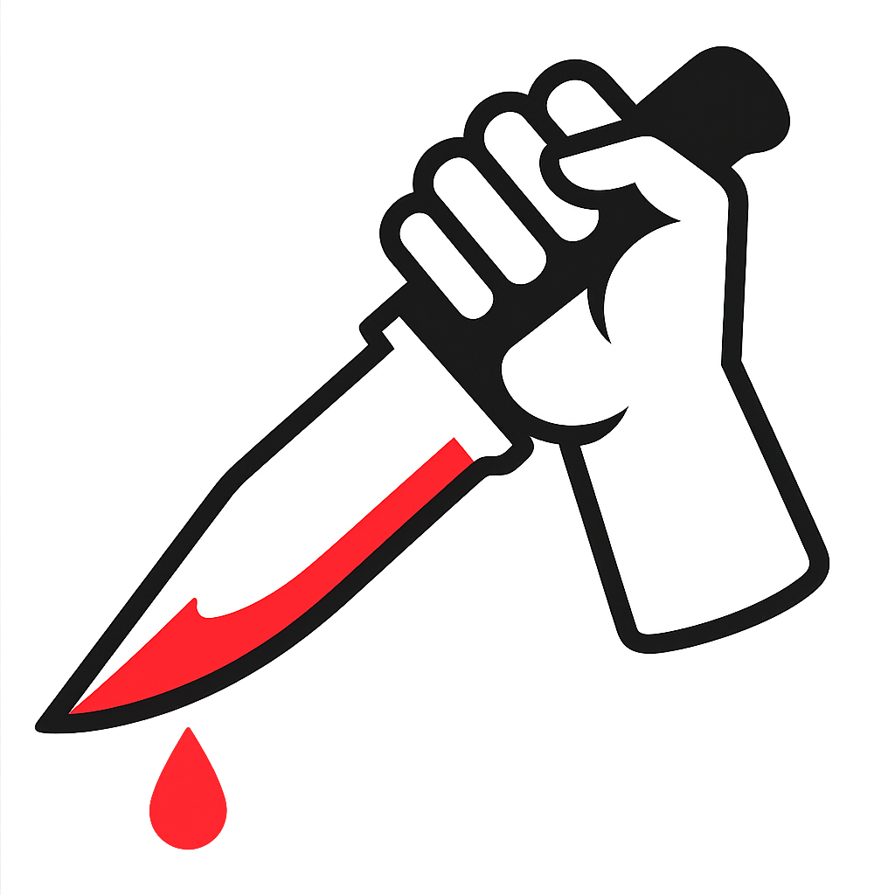

Piesik od Pokoleń S.A.
Psie mięso to przyszłość!

Wiejskie Mięso
Produkty z lokalnego gospodarstwa, a nie hodowli przemysłowych.

Humanitarny Ubój
Dbamy, aby nasze psy były zawsze ogłuszone przed zabiciem.